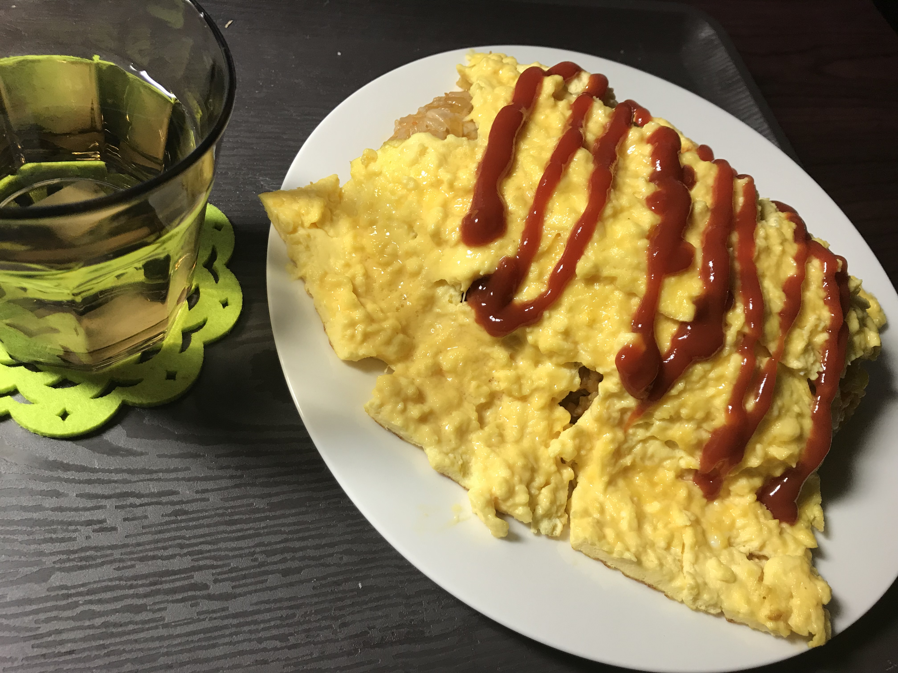

初めてのオムライスは感覚で作ると大変なことになりそうなので、インターネットで適当に画像でうまそうに見えたレシピを使い
作ります。（作ってる過程の写真はない！）料理はそれなりにできるようになっていたのでチキンライスの部分はレシピ通り作る
ことができ何の問題もなく、あとは卵をふわふわにして上に乗っけるだけとなりました。
僕「ふわふわにするにはなんかフライパンの上に溶き卵をいれお箸でシャカシャカしちょうどいい感じのところで取り出せばできるやろ」
そんなことを思いながら溶き卵をフライパンに流し込みシャカシャカしてちょうどいい感じのところで取り出せば、、、あれ？
取れない！いい感じに取り出せない！フライパンにこびりつく！
だめだひとまずなるべく形を壊さないようにご飯にのせるんだ
そんな決死の思いをしたオムライスがこちら、
